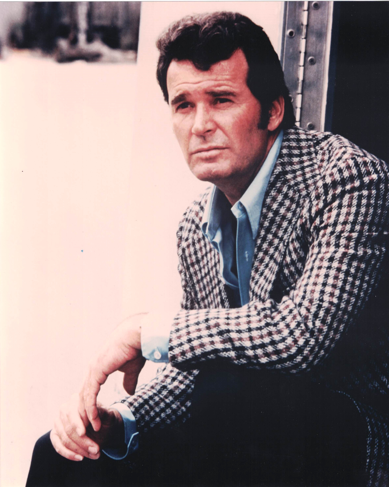

Product No. HEC-0070
$12.99
Shipping: $8.95
Description
8x10 color photograph as Rockford
Full Description
James Garner (Deceased) was an American actor known for his easygoing charm, dry humor, and natural screen presence in both television and motion pictures. Born James Scott Bumgarner on April 7, 1928, in Norman, Oklahoma, he served in the Korean War before beginning his acting career during the 1950s. Garner became a television star as gambler and reluctant hero Bret Maverick in the Western series "Maverick," which premiered in 1957. His relaxed, witty approach helped distinguish the show from more traditional Westerns and made him one of television's most popular leading men. He later achieved another major success as private investigator Jim Rockford in "The Rockford Files," which aired from 1974 to 1980. The role earned Garner an Emmy Award and became one of the defining performances of his career. Garner also starred in many successful films, including "The Great Escape," "The Americanization of Emily," "Grand Prix," "Support Your Local Sheriff!," "Victor/Victoria," "Murphy's Romance," and "Space Cowboys." His performance in "Murphy's Romance" earned him an Academy Award nomination for Best Actor. Later in his career, Garner appeared in "The Notebook" as the older version of Noah Calhoun, introducing him to a new generation of movie audiences. James Garner died on July 19, 2014, at age 86. His memorable work in "Maverick," "The Rockford Files," and numerous classic films continues to make his autographs, photographs, and memorabilia popular with collectors.
Condition
Excellent condition